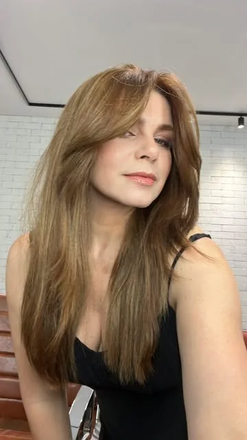
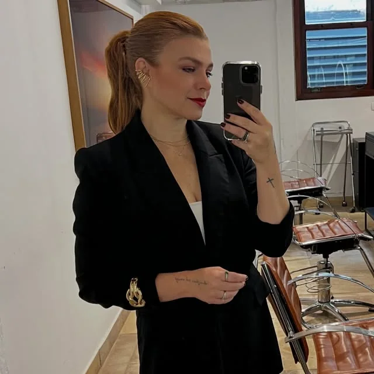

Quem assina
Nasci loira.
Aos 17 anos, a Zaira escondeu a própria essência no cabelo escuro e nunca mais ousou clarear. Por muito tempo, acreditou que evoluir tecnicamente seria suficiente.
Até entender que não basta dominar a técnica: é preciso reconhecer o valor do que se faz e se posicionar à altura dele. Hoje, ela vive a frase que sempre repetiu às clientes: mudou, evoluiu e se libertou.
- Belo Horizonteonde atende, no salão Alexandre + Co., no Belvedere
- 16,4 milpessoas seguem a Zaira no Instagram (22/10/2026)
- Batom vermelhoa assinatura que ela mesma apontou
